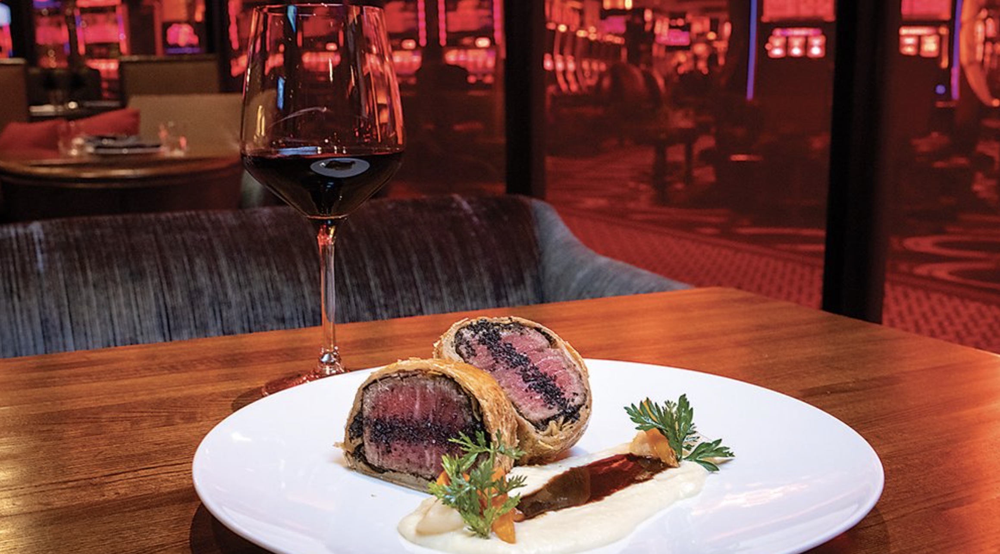

Beef Wellington

Originally created by the Duke of Wellington in 1815 to celebrate his victory over Napolean at the Battle of Waterloo, the storied Beef Wellington has now become synonymous with fine dining, luxury, and of course, Gordon Ramsay. Read on to learn how to make this decadent dish yourself!
Ingredients
- 2 x 400g beef fillets
- Olive oil, for frying
- 500g mixture of wild mushrooms, cleaned
- 1 thyme sprig, leaves only
- 500g puff pastry
- 8 slices of Parma ham
- 2 egg yolks, beaten with 1 tbsp water and a pinch of salt
- Sea salt and freshly ground black pepper
For the red wine sauce:
- 2 tbsp olive oil
- 200g beef trimmings
- 4 large shallots, peeled and sliced
- 12 black peppercorns
- 1 bay leaf
- 1 thyme sprig
- Splash of red wine vinegar
- 1 x 750ml bottle red wine
- 750ml beef stock